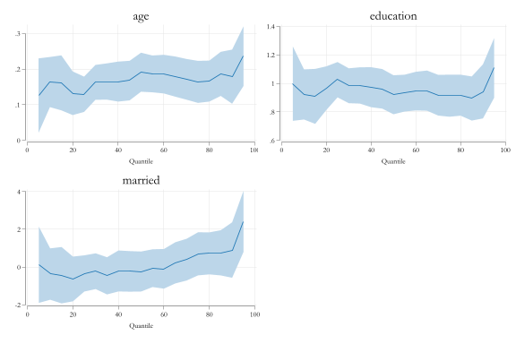
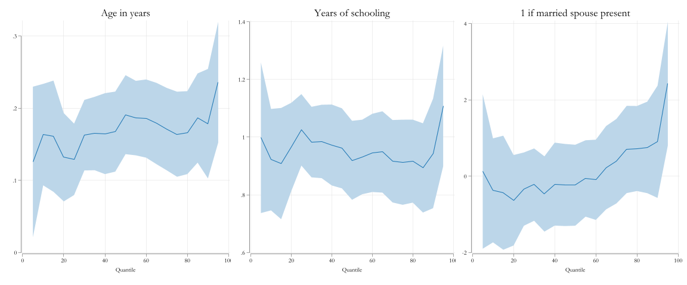
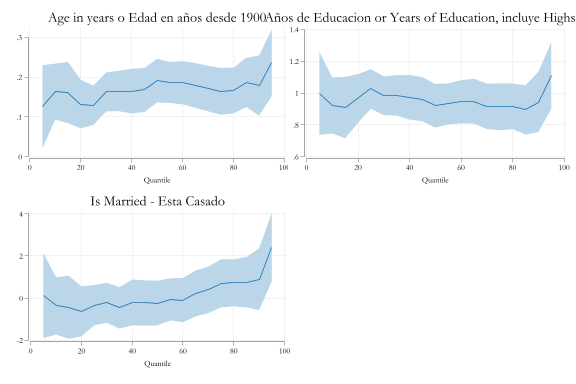
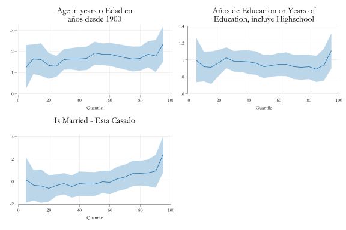
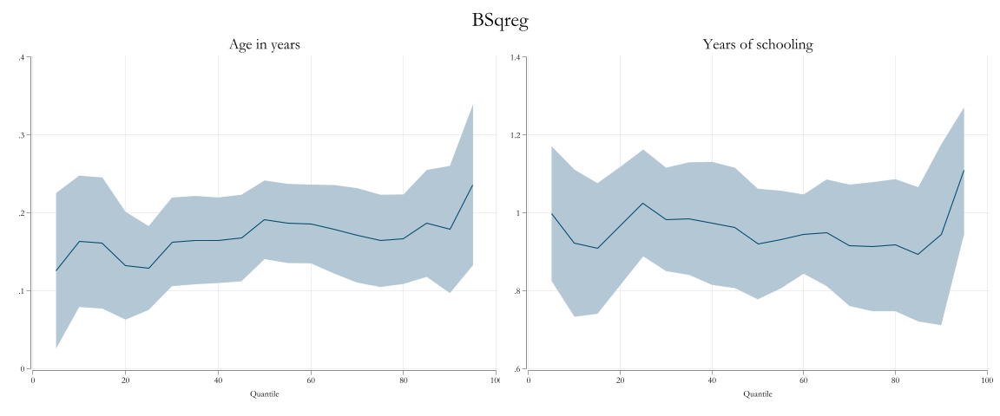
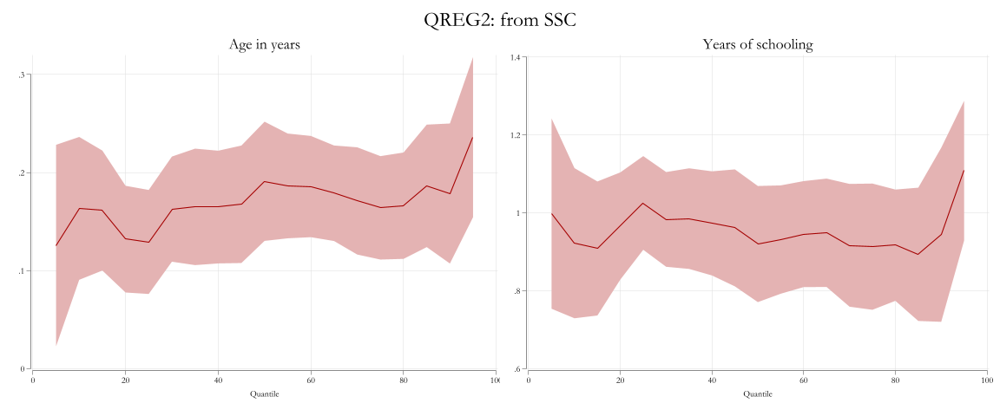
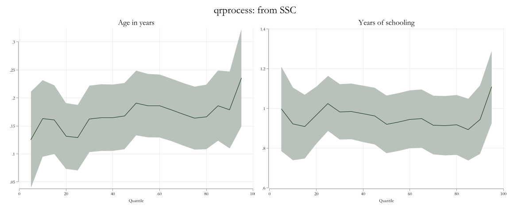
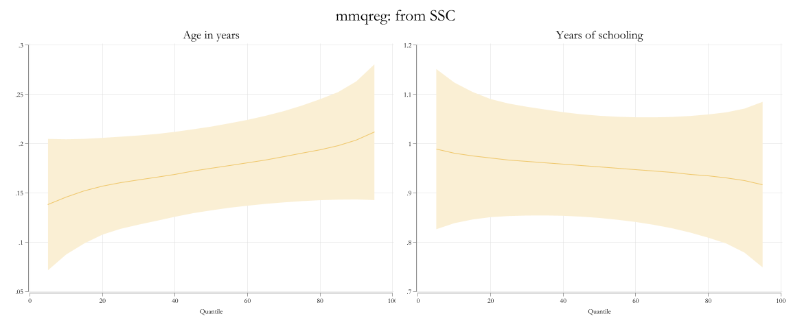
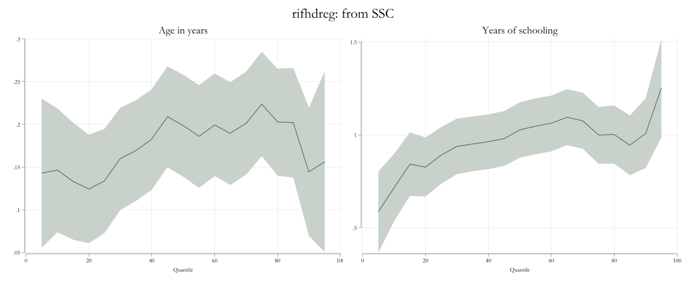
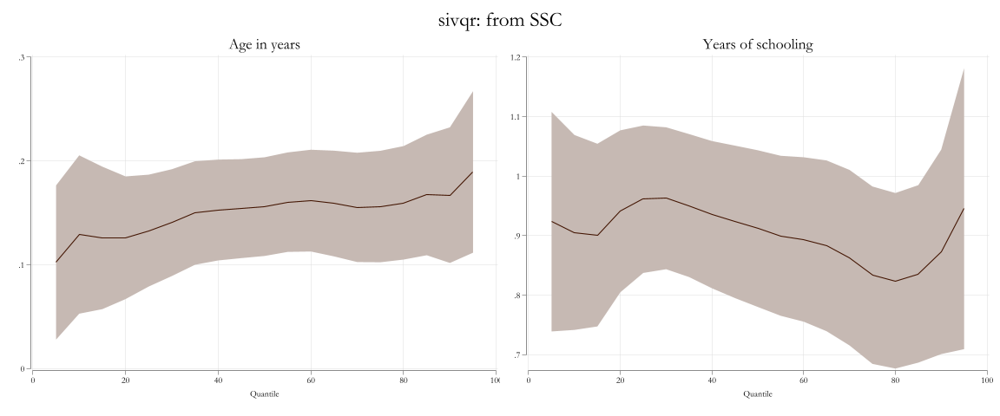

clear all
webuse womenwk, clear
set scheme white2
color_style tableauPloting Quantile Regressions: qregplot
Because no one is average
Plotting quantile coefficients
Quantile regressions are useful statistical tools that allow researchers to analyze the relationships between dependent and independent variables beyond their conditional means. To analyze such models, researchers commonly plot the estimation model coefficients across all estimated quantiles. This approach enables researchers to describe a larger set of coefficients, providing visuals of the trends and differences across the distribution.
Previously, the only command available to create distributional plots of this type was grqreg. However, this program had two limitations.
- It does not support factor notation.
- It could only be used after the official commands
qreg,sqreg, andbsqreg.
With the introduction of new commands that focus on the estimation of quantile regressions, under different assumptions of strategies, there was a need for an update to the grqreg program. This update came in the form of a new command called qregplot.
This page aims to demonstrate how to use the qregplot command to plot coefficients from quantile regressions, which is compatible with a variety of quantile type commands.
The Setup
To work with the following examples, you will need to install the following commands from SSC:
ssc install qregplot, replace
ssc install mmqreg, replace
ssc install qrprocess, replace
ssc install ivqreg2, replace
ssc install qreg2, replace
ssc install xtqreg, replace
ssc install sivqr, replace
ssc install color_style, replaceAnd, for the data, we will use a very small dataset, available from Stata datasets examples:
How does it work?
At its core, the command qregplot has a very simple structure, and its workflow can be described as follows:
- You estimate a quantile regression model with the command of your choosing (if allowed in
qregplot) for any quantile. qregplotreads all the metadata regarding the model specifictation, options, and command used from the information saved in e().- Using the same data structure, estimates the exactly same model using for all quantiles of interest.
- Collects all coefficients, and confidence intervals, to prepare the information for plotting.
- Plots the coefficients of the selected variables.
Examples
Assume you are interested in estimating a model, where wages are a function of age education, marital status, and county of residence.
Furthermore, lets say that we are interested in conditional quantile regressions. You could estimate this as follows:
qui:qreg wage age education married i.countySince we are using quantile regressions, you want to plot some of the coefficients across the distribution for all variables but the county dummies.
Because I know I may have to re-edit the graphs, I’ll store the coefficients into e_qreg. So I do not need to re-estimate all quantiles again.
qregplot age education married , /// Variables to be plotted. (Must appear in the model specification)
estore(e_qreg) /// Request Storing the variables in memory
q(5(5)95) // and indicates what quantiles to plot
This is a very good start. In the newest version of qregplot, I add some default options to the plot, providing a look that is visually pleasing. Notice the margins are also tight (less waiste of space).
Nevertheless, I would like to use variable labels for titles in each figure. But I dont want to re-estimate them all, but what I can do is plot “from” the stored coefficients. When doint this, I do not need to specify q(list of q's) again.
qregplot age education married , ///
from(e_qreg) /// <- Indicates where to look for coefficients
label // No longer needed to add Q's and request Labels(results e_qreg are active now)If you want, you can change the color, intensity, or transparency of the confidence intervals. But if you like what you see (I do), you can just keep it.
Now, say that I want to see this, but in 3 cols. This would be a graph combine option. I will use the new syntax :
qregplot age education married , ///
from(e_qreg) label ///
col(3) /// request 3 column with
ysize(5) xsize(12) // and different sizes for the graph(results e_qreg are active now)
With the new command, you can also modify the titles and costumize them as needed:
qregplot age education married , ///
from(e_qreg) ///
col(2) /// and different sizes for the graph
mtitles("Age in years o Edad en años desde 1900" ///
"Años de Educacion or Years of Education, incluye Highschool" ///
"Is Married - Esta Casado") //<- ads long titles(results e_qreg are active now)
So, seems that the titles are too long. So lets adjust them using labelopt(options). This option tells the program to break the long titles into two lines, so there is less overlapping in the figure.
qregplot age education married , ///
from(e_qreg) ///
col(2) /// and different sizes for the graph
mtitles("Age in years o Edad en años desde 1900" ///
"Años de Educacion or Years of Education, incluye Highschool" ///
"Is Married - Esta Casado") ///<- ads long titles
labelopt(lines(2)) // breaks it in two lines(results e_qreg are active now)
Using other qreg commands
Above I showed you the basic syntax for most options. An advantage of qregplot, however, is that you can use it for other commands as well.
As a side bonus, I showcase color_style, changing the colors of the different plots:
qui:bsqreg wage age education married i.county, reps(25)
color_style bay
qregplot age education , q(5(5)95) seed(101) label title("BSqreg") ///
ysize(5) xsize(12)
qui:qreg2 wage age education married i.county,
color_style austria
qregplot age education , q(5(5)95) seed(101) label ///
title("QREG2: from SSC") ysize(5) xsize(12)
qui:qrprocess wage age education married i.county,
color_style robert
qregplot age education , q(5(5)95) seed(101) label ///
title("qrprocess: from SSC") ysize(5) xsize(12)
qui:mmqreg wage age education married, abs( county)
color_style derain
qregplot age education , q(5(5)95) seed(101) label ///
title("mmqreg: from SSC") ysize(5) xsize(12)
qui:rifhdreg wage age education married, abs( county) rif(q(50))
color_style shakira
qregplot age education , q(5(5)95) seed(101) label ///
title("rifhdreg: from SSC") ysize(5) xsize(12)
qui:sivqr wage age education married, q(50)
color_style troy
qregplot age education, q(5(5)95) seed(101) label ///
title("sivqr: from SSC") ysize(5) xsize(12)
Conclusions
There you have it. A small update that makes making qreg plots easy.
Just remember, qregplot is not a quantile regression estimator, it should be considered as a post estimation command that simply replicates what you had before.
Questions? comments? suggestions?
feel free to drop me a message.